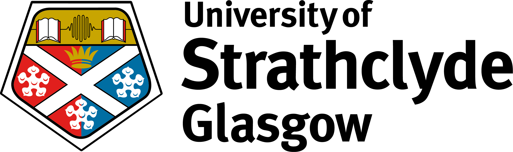

Dewald Roode Workshop 2023
June 22-23, 2023
Glasgow, Scotland
Glasgow, Scotland
| Home | Call for Papers | Registration | Travel Guide |
The 15th Dewald Roode Workshop on Information Systems Security Research will continue the efforts to advance the discipline of information systems security through the creation, dissemination, and preservation of well-formed research. The workshop is the annual event for IFIP WG8.11/WG11.13.
The workshop is hosted by the University of Strathclyde and will take place on June 22-23, 2023 at the Rosslea Hall Hotel near Glasgow, Scotland.
Selected accepted papers will be invited to submit an extended version to a Special Issue of the Organizational Cybersecurity Journal: Practice, Process and People
10/05/2023 UPDATE: A draft agenda for DRW2023 is available here.
21/06/2023 UPDATE: Camera-ready papers are available for download here.
Talk Title: From Cybersecurity Awareness to Cybercrime Fighting
From Basie: I met Dewald in January 1971 when he was appointed as a Professor in Computer Science at the new Rand Afrikaans University in Johannesburg. I was appointed as Lecturer in October 1970. We worked together till 1979 when he resigned and left for the IT industry. We kept close contact over the years, which was again fully renewed when he got involved with IFIP’s TC 8. He became Chair of TC 8 in about 2002 and as Chair he became a member of IFIP’s Technical Assembly (TA) consisting of all TC Chairs. I became Chair of TC 11 in 1995 and in 2000 became VP and Chair of the TA. Therefore I had close contact with Dewald as he was a member of the TA under my Chairmanship. In about 2007 I was elected as President of IFIP, and Dewald was still around as TC 8 Chair. I have no doubt that a lot of TC 8’s success and development was because of his Chairmanship during the beginning years of this century. We kept very close contact in South Africa till his death in 2009. Dewald was a colleague and close friend with had an immense influence on my life, and it is an extreme privilege to give the Keynote at this Workshop.
General Chair
Karen Renaud, University of Strathclyde
Program Co-Chairs
Jacques Ophoff, Abertay University
Justin Giboney, Brigham Young University
Alexandra Durcikova, University of Oklahoma (Continuity Chair)
For general questions about the workshop, please contact Karen Renaud (karen.renaud@strath.ac.uk).

|
 |